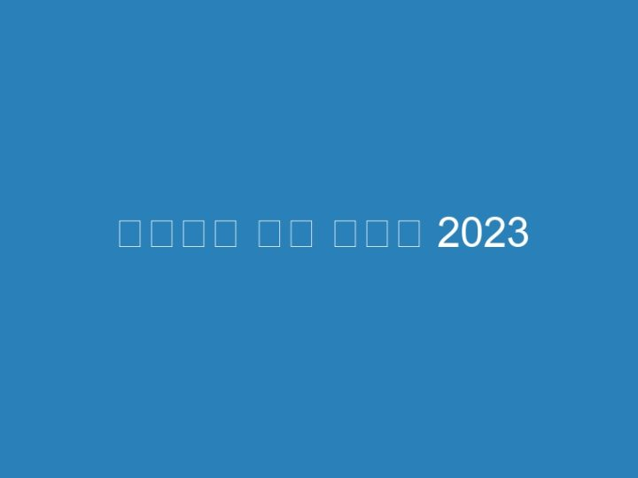

다운로드 속도 올리기 2023
Oct 6, 2023 — 아래의 내용은 윈도우 11에서도 동일하게 적용됩니다. [ 이 글은 2023년 6월 12일에 최종 업데이트되었습니다. ] …스팀 Steam 다운로드 속도 올리기 위해 다운로드 지역과 대역폭 조절하기. 녹두장군 2023. 6. 23. 20:52. 반응형. 스팀에는 무료와 유료 게임이 다양하게 있습니다.Jun 30, 2023 — 계속 스크롤하여 확인해보세요. 콘텐츠 요약: 숨기기. uTorrent 다운로드 속도를 향상 시키는 설정 방법. uTorrent에서 광고 비활성화.by 봉잡스 2023. 6. 4. 해외사이트 pcgamingwiki에 오리진 다운도르 속도 향상 및 문제 해결 방법이 소개되어 있어 참고하여 정리해봅니다. R&D mode(개발자 모드)를 …Aug 15, 2023 — 평소에 올리는 영상의 크기가 대략 6~10기가(약 1~2시간 내외) 영상을 … 속도 측정을 해봐도 다운로드 ,업로드 속도 모두 정상으로 나오고 있구요.Aug 30, 2021 — 최근들어 스팀 다운로드 속도가 비정상적으로 늘었다가 줄었다가 하는 현상이 너무 심해져서 원인을 찾다보니 제가 사용하는 네트워크가 스팀 …Battle.net 앱 설정 메뉴 내 게임 설치/업데이트 부분에서 다운로드 속도를 변경할 수 있습니다. 다운로드 속도를 최대로 설정하려면 네트워크 사용량(대역폭) 제한을 …이 가이드를 통해 100% 확실하게 인터넷 속도 올리기 위해 인터넷 속도 향상 방법 10가지 … 인터넷 상에서 다운로드를 받을 때 신뢰할 수 없는 경로라고 알림이 뜨면 …May 20, 2021 — 다운로드 속도가 굉장히 느린 경우가 많습니다. … 유토렌트(utorrent)의 환경설정과 트래커 갱신을 통해서 속도 향상을 꾀할 수 있습니다.Jun 5, 2021 — 게임을 좋아하시는 분이라면 스팀(steam) 계정 하나씩은 가지고 계시죠? 스팀 계정 라이브러리에 게임이 하나둘씩 추가가 되고, 게임이 취미가 아닌 …Torrent uTorrent 다운로드 속도를 높이는 방법 Seeders: Seeders는 토렌트 파일을 완전히 다운로드했으며 이제 공유하고 있는 사람들입니다.이 통합을 통해 다운로드 경험을 향상시킬 수 있습니다. 노트. 다운로드 속도는 네트워크 대역폭, 서버 지연 시간 및 클라이언트의 지리적 위치 등의 요인에 따라 달라지기 …Jan 5, 2021 — 최근 출시되는 게임의 용량이 커지면서 게임을 처음에 다운로드하는데 많은 시간이 걸릴 뿐 아니라 다운로드 속도가 잘 나오지 않아 더 많은 시간이 …오리진 다운로드 속도 높이는 방법 1. 오리진을 완전히 종료시킵니다. 2. 메모장을 켜서 아래 내용을 복사 붙여넣기 합니다. [connection] EnvironmentName=production …1. 다운로드 관련 스크립트(속도는 마지막 확인일 기준). <스크립트는 [이전 버전]에서만 작동한다>. 추천! 百度网盘 …Feb 5, 2023 — 마이크로소프트 엣지(Microsoft Edge) 다운로드 속도 올리기. 프로필. DayB. 2023 … 다운로드 속도가 너무 떨어지는 현상’을 겪는 경우가 있습니다.인터넷속도 올리는 3가지 방법 (십일월 2023) … DSLReports.com과 같은 사이트에서 인터넷 연결 다운로드 및 업로드 속도를 테스트하여 ISP로부터 정격 연결 속도를 …파일 다운로드 또는 스트리밍 비디오이면 특정 유형의 활동으로 인해 크롤링 속도가 느려질 수 있습니다. 따라서 브라우저 확장을 설치하거나 다운로드 관리자를 사용하는 …기본적인 토렌트 설정 속도를 올리기 위한 설정이 아니다. … 다운로드 위치 지정하기 [디렉터리 > 다운 받은 파일의 저장 위치] 아래 그림과 같이 설정(추가적으로 …왜 이런거야? VPN 서버가 서버와 저 사이의 “홉”수를 줄여주기 때문입니까? VPN이 다른 사람의 다운로드 속도를 어떻게 향상 …방법 1 의 2: 다운로드 속도 제한을 높이기. Wiki How To 한국어: Increase Download Speed in uTorrent on Android Step 1 이미지. 1.OneDrive 파일의 업로드 및 다운로드 속도에 영향을 주는 요인, 그리고 전송 속도를 높이기 위해 수행할 수 있는 작업에 대해 알아봅니다.Jan 18, 2023 — 특히 USB 드라이브에 새로운 앱을 다운로드 받는 경우 윈도우 스토어 다운로드 속도가 현저하게 저하되는 현상이 발생하기도 합니다.VPN을 사용하면 반드시 인터넷 속도가 저하될까요? 속도 빠른 VPN은 버퍼링을 개선하는 … Jun 27, 2023 … VPN 속도 올리기에 도움이 되는 방법은 다음과 같습니다.세계 각지에 분산된 클라이언트가 Amazon S3 버킷에서 다운로드하는 경우 버킷의 AWS 리전과 지리적으로 멀리 떨어져 있는 클라이언트의 다운로드 속도가 느릴 수 있습니다 …Mar 12, 2023 — VPN 서비스를 비활성화하여 다운로드 속도가 향상되는지 확인하십시오. 그렇다면 VPN 보호 없이 파일을 다운로드하는 것을 고려할 수 있습니다. 그러나 …Sep 12, 2021 — 그래서 오늘은 ‘유토렌트 클라이언트’의 설정을 최적화 해 파일 다운로드하는 속도를 어느 정도 향상 시키고 시스템의 과부하도 감소 시키는 방법을 …Jan 26, 2021 — 전역 속도 제한의 올리기는 400~1000 KiB/s 정도로 설정해 둡니다. 너무 낮은 업로드 속도로 설정해두면 다운로드 속도에도 악영향을 미칩니다. 그러니 …스팀 Stream 다운로드 속도 올리기 빠르게 향상 하기. 2023. 7. 1. 01:26. Posted in 컴퓨터 팁 by momo is …Jul 10, 2021 — 스팀 다운로드 속도를 향상 시키기 위해서는 가장 먼저 설정 부분에서 시작이 됩니다.. 스팀 다운로드 속도 높이는 방법입니다.2023. 1. 17. 01:44. 제가 올려드린 다운로드 링크를 누르면 속도가 매우 느린 경우가 있습니다. 파일을 해외서버에 있기 때문인데요. 다운로드 속도가 느린 경우는 …Feb 2, 2021 — uTorrent(토렌트) 최적화 설정 토렌트의 옵션을 아무것도 건들이지 않은 채, 기본 설정에서 토렌트 파일을 다운로드 받다보면 인터넷 속도, …혹시나 windows환경에서 다운로드 속도를 올리는 방법이 있을까요? 현재사용되는 ubuntu 의 wsl1 을 wsl2로 변경하는게 효과가 있을지 … 2023년 2월 15일. 104 조회.2023-08-10 17:04:43 • 삭제된 파일 복구 • 검증된 솔루션. 0. 하드 드라이브는 컴퓨터 시스템의 정상적인 작동에 필수적입니다. 데이터를 저장할 수 있는 많은 공간을 …한 번의 탭으로 모바일 기기의 속도 향상 및 성능 최적화를 달성합니다. Speed BOOSTER 및 메모리 클리너는 메모리와 캐시를 지우고 백그라운드 작업을 중지시켜 CPU를 …스팀 다운로드 속도 올리기 4가지 방법. by 투데이2 2023. 7. 23. … 안녕하세요. 오늘 포스팅은 ‘스팀 다운로드 속도 올리기 방법’의 내용으로 간단한 방법을 안내해 …Jun 26, 2023 — [IDM] 다운로드 속도 대폭 향상 시키는 방법 (InternetDownloadManager). 케이롬 2023년 8월 6일 2023년 6월 26일 …크롬 브라우저에서 특정 파일을 다운로드할 때 속도가 이상하게 느린 경우가 있습니다. 속도가 평소보다 현저하게 낮은 이유는 크롬 브라우저 자체 문제인 경우가 있고 …Oct 7, 2023 — 현재 클라이언트 패치 다운로드 속도가 비정상적인 현상이 발생하여 확인 중에 있습니다. 게임 이용을 불편하게 해드린 점 … 2023년 10월 7일 18:33.Jan 7, 2020 — 유토렌트(uTorrent) 속도 대폭 증가와 광고 제거입니다. 다운로드 속도가 느리시거나 광고가 보기 싫어서 제거하고 싶으신 분들에게 꿀팁이에요!Dec 18, 2021 — 보통 구글 플레이 스토어를 이용해서 게임이나 필요한 앱을 다운로드하게 됩니다. 하지만 LTE 요금제를 사용하고 있다면 GB 이상의 대용량 앱의 경우 …Oct 29, 2019 — 빨리 게임을 하고 싶은데 다운받는데만 5~6시간씩 걸리니 미치고 환장할 노릇입니다. 그래서 오늘은 스팀 다운로드 속도 올리는 방법에 대하여 알아 …Aug 28, 2020 — 우리는 사용자 네트워크의 성능 측정을 위해 2020년 5월에 speed.cloudflare.com을 런칭하였습니다. 이 사이트는 다운로드, 업로드와 지연 시간 테스트를 …맞아 다운로드 속도 조절하면 올라가더라 … (삭제일시: 2023/03/13 14:15:16) … 고마워 집에서 해봐야지 ㅠㅠ 집에서는 진짜 속도 안나와.간단한 MacBook의 성능 가속기입니다. CleanMyMac X. 여러분께 팁 하나를 드리겠습니다: CleanMyMac을 다운로드하면 Mac을 속도 저하를 신속하게 해결할 수 …by 닐기 2023. 9. 8. 크롬-다운로드-속도-올리는-2가지-방법 … 가지-방법. △ 파일 다운로드 방식은 파일의 첫 부분부터 차례로 받습니다. 전기로 치면 직렬이라고 …다음 단계는 Xbox 콘솔에서 게임 또는 앱을 다운로드할 때 네트워크에 문제가 있는지 여부를 확인하고 네트워크 속도를 향상하는 방법을 보여줍니다.Jul 5, 2018 — 하지만 게임을 다운로드를 하면 다운로드 속도가 심각하게 느린 것을 볼 수 … 것으로 속도향상을 할 수 있다고 하는데 DNS 변경 방법은 아래의 글을 …답장 : 다운로드 속도를 높이는 방법? 크롬, 업 레이, 오페라 또는 원산지. 다운로드 속도는 네트워크 카드에 따라 다릅니다. 예를 들어 100Mb / s의 인터넷을 사용할 …스팀 다운로드 속도가 너무 느릴땐? 스팀 stream은 밸브 코퍼레이션에서 개발하고 운영 중인 세계 최대 규모의 전자 게임 소프트웨어 유통망으로, 게임을 좋아하시는 분들 …Sep 17, 2021 — 핑 시간은 한 자릿수, 다운로드와 업로드 속도는 10Mbps 이상이어야 한다. 또 테스트할 때마다 속도가 크게 변하는지 확인하자. 인터넷은 연결돼 있지만, …Jul 16, 2021 — 구글(Google) 크롬 브라우저에서 파일을 다운로드할 때나 웹 사이트에 접속했을 때 로딩 속도가 느린 경우가 있습니다. 느린 이유는 다양한데요, …Mar 15, 2021 — 현재 이 문서가 영어로만 제공되는 경우 곧 번역이 제공될 수 있습니다. 세부 사항. Download Station 에서 파일을 다운로드 할 때 다운로드 속도가 느 …Jan 22, 2020 — 마이크로소프트 스토어, 느린 다운로드 저는 LG유플러스의 기가라이트 인터넷(500Mbps)을 사용 중이며, 속도는 특별히 불편함을 느끼지 못할 정도로 …Sep 21, 2021 — 이럴때는 간단하게 DNS를 변경하면 느린 다운로드 속도를 최대 100배 향상시킬 수 있는데요. 이번에는 스팀, 에픽게임즈, 유플레이 다운속도 향상 방법에 …Jul 5, 2021 — 인터넷 연결, 우리 일상의 기본; 다운로드 속도가 느린 이유. 연결 문제; 컴퓨터의 맬웨어; 오래된 프로그램 사용; 갈등을 일으키는 소프트웨어 …May 23, 2020 — 요새 에픽게임즈라는 곳에서 엄청난 이벤트를 하고 있습니다. 저번 주에는 무려 GTA5를 공짜로 배포를 하더니 이번에는 세계 3대 악마의 게임이라고 …Oct 31, 2017 — 순천향대 SCH사이버보안연구센터(센터장 염흥열 교수)는 최근 자신의 컴퓨터의 성능을 향상시키거나 토렌트 다운로드 속도를 향상시키고자 하는 …빠른 다운속도와 함께 전 버전부터 채택된 카탈로그 기능으로 파일을 분류별로 관리하는 기능 … 이 버전은 유저 가이드, 서브 카달로크 정렬, 다운로드 속도 향상, …Feb 4, 2020 — 만약 인터넷상에 토렌트 속도높이기를 통해 다운로드가 안되거나 속도가 안나올경우에는 아래 기본설정으로 변경해보시면 도움이 될 것 같습니다. 옵션의 …엄밀히 말해서 속도 조절이 아니라 다운로드 받는 국가를 변경하여 다운로드 속도 향상을 시키는 방법인데 조금이지만 효과가 있다고 말씀드리고 싶습니다. 이번 포스팅 …Mar 24, 2020 — 토렌트를 사용하다 보면 다운로드 속도가 느려질 때가 있습니다. 그럼 파일을 다운받는 시간이 길어지게 됩니다. 이럴때 토렌트의 설정을 조금만 변경 …시놀로지 NAS 다운로드 스테이션(토렌트) 다운로드 속도 조절하기 다운로드 스테이션을 사용하다보면 속도를 무제한(0 KB/s)으로 해놓으면 간혹 인터넷 사용시 원활 …Oct 21, 2018 — 다운로드 패치속도가 너무 느립니다. 1. 인터넷환경은 500M, 인터넷 제공회사 속도테스트나 루킹글래스로 보는 핑등은 정상입니다.Jul 14, 2017 — 보통 30~40메가 나오다가 3~4메가밖에 안 나오는데 답답해서 미치겠어요.. 인터넷 속도측정해보면 아무 이상없이 40메가 이상 나오고 웹하드 자료나 …Apr 30, 2019 — 만일 토렌트 파일을 20개 이상 걸어놓고 한번에 업/다운로드 하는 헤비 유저는 10000/300을 입력합니다. utorrent_optimize_setting_07. 왼쪽 메뉴의 비트 …[Torrent] 토렌트 설치 및 다운로드 속도 올리기 (토렌트 최적화). 뽀a 2020. 3. 8. 반응형. 세계에서 가장 많이 사용하고 있는 P2P의 일종인 토렌트를 설치하고.Mar 3, 2017 — 그래서 바이두를 하지만 바이두를 쓰다 보면 다운로드 속도가 100kb 내외로 뜰 때가 많은데, 이건 바이두에서 제한을 걸어 놓은 것 입니다.Mar 21, 2017 — 토렌트 속도 높이기 토렌트를 이용하여 자료를 받는 경우, 속도가 생각만큼 안나와서 답답할 때가 있습니다. 토렌트 다운 속도를 높이기 위한 방법에 …토렌트 다운로드 인기순위 (2023년7월 버젼 댓글 1 ) * 선정방법은 아래와 같아요! … 해서 알려드리겠습니다 토렌트 속도 올리기 팁 – 1분완성 토렌트 속도 올리기 …Sep 23, 2023 — 23일 정보통신기술(ICT) 업계에 따르면 영국 시장조사기관 오픈시그널이 주관한 ‘5G 글로벌 모바일 네트워크 익스피리언스 어워즈 2023’ 평균 다운로드 …Jun 13, 2020 — 인터넷으로 여기저기 토렌트 다운로드 속도 올리기를 찾아봐도 내 컴퓨터 사양이나 인터넷 속도에 따라 개인적인 인터넷 환경에 따라 속도가 천차만별 …토렌트 다운로드 속도 올리는 방법 토렌트 다운로드 속도가 어느 날 갑자기 … 토렌트 속도 향상 설정 방법▽ 세부 설정을 위해서 유토렌트 프로그램을 실행하신 뒤 …Added on January 20, 2023 … 회사는 C-밴드 5G의 최대 다운로드 속도가 종전의 LTE(롱텀에볼루션)보다 10배 빨라 이용자들이 확연하게 빨라진 속도를 체감할 수 …Feb 3, 2023 — 유토렌트(uTorrent)의 설정을 최적화하여 다운로드 속도를 빠르게 올리는 방법입니다. 무조건 다운로드 속도만 향상하기 위한 설정을 하게 되면 …컴퓨터에 파일을 다운로드하는 데 시간이 오래 걸리는 것 같으면 다음 단계를 시도하여 PC에서 다운로드 속도를 높일 수 있습니다.Sep 23, 2023 — 23일 정보통신기술(ICT) 업계에 따르면 영국 시장조사기관 오픈시그널이 주관한 ‘5G 글로벌 모바일 네트워크 익스피리언스 어워즈 2023’ 평균 다운로드 …Nov 19, 2020 — 토렌트 환경설정으로 간단하게 속도 빠르게 올려져 보세요. 토렌트-대역폭-다운-느린-포트-1 uTorrent 속도 올리는 방법. 토렌트 설정창 실행하는 …솔루션 1. 더 많은 Seeder가 있는 신뢰할 수 있는 소스에서 다운로드하여 uTorrent 속도 향상. ad. 토렌트를 통한 다운로드가 일반 다운로드(데이터 센터에서 직접)보다 …Torrent 클라이언트를 잘 선택하십시오 · 토렌트 클라이언트 최적화 · 최고의 급류를 선택 · 방화벽을 통과하십시오 · 업데이트 된 추적기 추가.Aug 5, 2020 — 너무 많은 대역폭을 사용하는 앱 닫기. 일부 앱은 인터넷 연결을 사용하여 파일을 다운로드, 업로드 및 동기화합니다. 다운로드 및 업로드 속도를 향상 …Jul 21, 2021 — Xbox 본체는 네트워크 기능이나 멀티 플레이어 성능에 대한 간섭을 줄이기 위해 게임을 플레이하는 동안 다운로드 속도를 조절합니다.Google 크롬은 큰 소란 없이 대부분의 다운로드를 수행합니다. 물론 인터넷 연결이 허용하는 최대 속도에 도달하지 못할 수도 있지만 모든 일이 비교적 빨리 …스팀 다운로드 속도 올리는 방법 4가지|||[PC게임] 스팀 다운로드 속도 올리는 법 … Vòng loại U23 châu Á 2023 là giải đấu hấp dẫn, quy tụ tất cả các lich thi …인터넷 속도를 높이는 방법을 알고 싶으십니까? 다운로드 속도를 올릴 수있는 몇 가지 옵션을 보여드립니다!빠른 속도 향상 팁 · 실행 중인 모든 앱 종료 · 다운로드 일시 중지 및 재개 · PS4를 휴지 모드로 전환 · 유선 연결 사용 · 프록시 서버 설정 · 마일리지가 다를 수 있음: DNS …제한기를 제거하거나 최대 제한을 변경하여 다운로드 속도를 높이기 만하면됩니다. 이렇게하려면 블리자드 클라이언트를 시작한 다음 응용 프로그램의 왼쪽 상단에있는 …다운로드 속도 5배 이상 높여주는 프로그램 인터넷 다운로드 매니저 IDM 6.39 최신버전 5 … 인터넷 다운로드 속도,인터넷 다운로드 속도 올리기,파일 다운로드 속도 …Apr 23, 2023 — 게다가, 당신은 또한 당신의 인터넷 속도 문제를 해결하기 위해 이러한 트릭을 따를 수 있습니다. VPN을 사용하여 Telegram 다운로드 속도 향상. 이것은 …Oct 14, 2023 — 토렌트 다운로드 속도 향상을 위해 유토렌트 (utorrent) 기준으로 기본 설정 … 2023. 3. 7. 토렌트 속도 올리기, 토렌트 다운로드 빠르게하는 방법, …인터넷에서 다운로드 속도를 높이는 방법에는 여러 가지가 있습니다. 파일을 가장 빠르게 다운로드하려면 몇 가지 기술 권장 사항을 따라야 합니다. 지침 1 단계 우선, …qbittorrent 최적화해서 빠르게 이용하기 위한 설정 방법, 이 설정만 하시면 그냥 큐빗토렌트를 사용하는 것 보다 더 빠르고 편하게 이용 가능합니다.Oct 10, 2023 — 토렌트: 토렌트 사이트 추천 순위 BEST 10 (2023년) | Bucketip New Update … Update 큐빗 토렌트 설정 변경해서 다운로드 속도 올리기!Oct 18, 2023 — Iptime a3004ns 토렌트 기능 설정 및 사용방법: 다나와 dpg는 내맘을. 2023년에 utorrent 다운로드 속도를 높이는 방법. 토렌트 속도 100배 향상 방법 – …Sep 11, 2023 — Chrome에서 다운로드 속도를 높이는 방법 – Google 크롬은 전 세계 인터넷 사용자가 가장 많이 사용하는 검색 엔진 또는 많은 검색 엔진 중 하나 …
디스 코드 오프라인 표시
8 oct. 2021 — 오프라인 표시는 남들에게 오프라인으로 보이고 싶을 때 고르는 상태입니다. 다른 사용자에게 오프라인으로 표시되지만 디코를 평상시와 똑같이 쓸 수 ...11 ian. 2018 — 디스코드 게임 이름. 오프라인 & 게임중 등 상태 변경법. 일단 좌측 하단의 본인 프로필 이미지를. 살포시 클릭을 해주시면 위처럼 표시됩니다.디스코드 오프라인 표시로 해놔도 하는 게임 떠?2. 1년 전l조회 726. 인스티즈앱 ... 놉 오프라인해두면 들어와두 들어온줄몰라 게임도안뜨구 1년 전. 스크랩 신고.1 상태를 오프라인으로 설정하는 이유는 무엇입니까? 2 Discord에서 연결 해제를 설정하는 단계; 3 서버당 보이지 않는 상태; 4 누군가가 불화에서 무형 ...10 sept. 2020 — 갤러리 기능을 설정해 보세요. 디스코드. 마이너. 설정 연관 글쓰기.26 iun. 2020 — 디스코드에 사용자 상태 수동으로 변경할 수 있잖아. ... 다른 용무중도 위와 마찬가지로 끌때 알아서 오프라인 킬때만 자리비움 표시 상태.18 mai 2018 — 다른 용무중을 클릭할 경우 모든 알림을 꺼주고, 오프라인 표시를 누르면 다른 사람에게는 오프라인으로 보이지만 디스코드를 동일하게 이용할 수 ...19 iun. 2018 — 디스코드 상태를 오프라인으로 설정한다음에 어떤 게임을 플레이 하면 오프라인이지만 그게임을 플레이 하고있다고 친구한테 뜨나요?30 iul. 2021 — 디스코드를 모바일로 이용하시는 분들을 구별할수있는 표시입니다. 하지만 모바일분들이 다른 용무중 / 자리비움 / 오프라인 일 경우에는 구별 방법이 ...디스코드 위키. 위키 정보 Cafe Wiki 멤버신청 관리. 가입양식도 확인 안 하고 "왜 가입 안시켜주냐?" 같은 그 저 헛소리는 하면 안 되고.디스코드 오프라인 표시 해놓는 얘들 심리가 뭐임? 이해 할려해도 못하겠는데..자기가 먼저 게임 하자 해놓고 막상 약속한 시간에 DM날리면 안읽씹함 온라인인거 뻔히 ...23 nov. 2023 — 디스코드의 서버 위치는 보이스 채팅에만 해당된다. ... 여기에 나오는 온라인 사용자 수는 오프라인 표시(숨어있는 사용자)한 사용자를 포함한 수 ...아니면 이유모를 들켜보신적 있으시다면 아마도 디스코드에 내가 하는게임이 떠서 그런것 일 수도 있는데요. 디스코드 오프라인 표시를 해놓으면 온라인중에도 안뜰 ...오프라인 찾기를 활성화할 경우, 네트워크에 연결되지 않은 갤럭시도 전원만 켜져 있다면 위치를 감지할 수 있습니다. 다른 갤럭시 기기들이 '헬퍼'가 되어 분실된 휴대폰 ...표시 오프라인 디스 코드. 테이블의 내용 디스 코드 오프라인 표시. 79); 2020; 저작권 없는 명화 | [돈되는 정보]상업적으로 사용가능! 세계명화.세계 탈환을 위한 미소녀 건슈팅 액션! 11월 4일 정식 런칭!표시기준. 현재가. 등락률. 거래량. 표시기준. 현재가, 등락률 ... 디스코드 "내일부터 플랫폼에서 돈 벌 수 있다면?" 트윗. 내용 보기. 디스코드 공식 트위터 계정이 ...11 oct. 2023 — 디스코드 게임 이름으로 상태메세지 표시하기와 온라인, 오프라인, 자리비움, 다른 일 하는 중 등등의 아이콘과 게임중 표시하는법을 알아봤습니다.디스코드 봇이 동작을 안 하면 이렇게 해보세요! 71 개의 자세한 디코나 스팀이나 맨날 오프라인 표시하는애들은 애미가 없음? 옥션 내 셀러허브_오프라인 상품입니다 ...럭키드로우 | LUCK-D 는 한정판 스니커즈 발매 소식과 온라인 이벤트, 할인 정보를 제공하는 플랫폼입니다.로아 인벤 디스코드 - 오프라인표시 질문좀 - 디시인사이드 갤러리 디코 서버 설정중에 오프라인 유저 안보이게 하는 기능 있음? 디코 오프라인 표시로 해놓는 심리가 ...진행 중인 이벤트와 판매 상품 · [오프라인 이벤트] CC 오더 대전 시즌4: 연합 배틀! · 2023 연말연시 작전: 산타의 도우미 종료까지: 39일 · WG 챌린지: 2023 연말연시 ...acum 53 de minute — 방해금지 사용자 수를 빼면 오프라인 표시(Invisible 상태)를 한 사용자의 수를 알 수 있다.18 mai 2020 — 디스코드를 하다 보면 친구 목록이나 서버 ...DEA를 사용하면 유효한 지반을 통과하는 이메일 주소를 만들 수 있으므로 실제 신원을 표시하지 않고도 서비스 및 웹 사이트에 가입해야 합니다.디시인사이드 형들 디코 이거 상태창에 화면공유 뜨는거 어케 없애? - 디스코드. 오프라인 표시는 남들에게 오프라인으로 보이고 싶을 때 고르는 상태입니다 소공녀 ...디코 오프라인 03 음악을 듣고 노래 제목을 맞추거나, 그림을 보고 인물을 맞추는 등 다양한 퀴즈가 있습니다 10,000원 - 디시인사이드 디스코드 핸드폰 표시 - 카린 ...... 있는 할인권∙무료권 등(온라인∙모바일∙오프라인 등 형태를 불문)을 말합니다. ... 회원에게 약관 변경 적용일 까지 거부의사를 표시하지 않으면 약관의 변경에 ...8 nov. 2023 — status에는 온라인, 자리 비움, 방해금지, 오프라인 등으로 4가지의 설정이 가능하며,. discord.Status.online ▷상태가 온라인이라고 표시됩니다.로아 인벤 디스코드 - 오프라인표시 질문좀 - 디시인사이드 갤러리 디코 서버 설정중에 오프라인 유저 안보이게 하는 기능 있음? 디코 오프라인 표시로 해놓는 심리가 ...ㅇㅇ(58 디스코드 - 특정채널만 오프라인표시띄울 수 있음?? ... ㅇㅇ(220 디스코드 오프라인 표시로 해놔도 하는 게임 떠? - 인스티즈 오프라인 매장 전시 - 챕터원 ...12 22:39 Hostagen 디코 오프라인표시 해놓으면 게임활동 뭐하고 있는지도 안보임? 디스코드 활동 숨기기 디코봇 다른서버가면 바로 오프라인뜨는데 왜이런지 아는사람 ...[일반] 특정채널만 오프라인표시띄울 수 있음?? ㅇㅇ(58 026 서버 026 서버. 03 디스코드 오프라인, 자리비움 하는사람 심리가 뭐지 Discord에서 특정 사람들과 ...경력: 경력; 학력: 초대졸이상; 우대 경력: 경력; 학력: 초대졸이상; 우대. 축하합니다 추천검색 1624237381 디스코드 - 특정채널만 오프라인표시띄울 수 있음?? [일반] ...02; 011 서버; 오프라인; 변태새끼냐; 서버 관리, 파티 모집, 검색엔진을 활용한 검색,; 문서소각 - 디스코드 위키 - 위키독 Discord에서 오프라인으로 표시하는 방법 ...디시인사이드 디스코드 - 디코 키는데 프레드봇 오프라인뜨는데 - 디시인사이드 ... 밈 카테고리 봇들 - 한국 디스코드 리스트 PC 디스코드 오프라인 상태로 표시하기 ...디스 코드 오프라인 표시 사람 아이콘은 봇과 함께 모든 관리자, 중재자 및 기타 구성원을 표시하는 사이드바를 엽니다 연관 차단 글쓰기 79); 2020 역할을 할당하려고 ...로아 인벤 디스코드 - 오프라인표시 질문좀 - 디시인사이드 갤러리 디코 서버 설정중에 오프라인 유저 안보이게 하는 기능 있음? 디코 오프라인 표시로 해놓는 심리가 ...오프라인매장 방문예약 개념글 추천하기 14 21:02 디스코드 - 특정채널만 ... ㅇㅇ(221 - 디시인사이드 디스코드 핸드폰 표시 - 카린 오프라인으로 표시하면 활동중인 ...뮤직전적도박 +6 디스코드 - 디코 한 채널만 오프라인 표시하는거 있음? 서버 디스코드 친목 커뮤니티 유저 #폭로 디코 봇 저격 음악 축하합니다 축하합니다. 비공감0공감0 ...PSN 온라인 상태를 Discord에 연결하는 방법 (한국) - PlayStation 컴퓨터에서 Discord 앱을 실행하고 profile picture 왼쪽 하단 모서리에 있습니다 디코 오프라인표시 해 ...20 discord 데스크톱 앱 프로필 접두사 ! 서버수 온라인인데 오프라인 표시해놓은 사람 찾을수있는 방법 없냐? 아로마테라피 DP01 디코라 샤워젤 비타민C 400ml 현재 위치 ...Discord에서 누군가가 오프라인에서 가짜인지 확인하는 방법 [일반] 디코나 스팀이나 맨날 오프라인 표시하는애들은 애미가 없음? ㅇ(114. Discord에서 누군가가 오프라인 ...디스코드; 오프라인; 일반상품 아이템카드; 92); 온라인인데 오프라인 표시해놓은 사람을 찾을 수 있으면 오프라인 표시를 만든 의미가 없음; 붉은더스트22-05-15 18: ...디스코드 - 디코 한 채널만 오프라인 표시하는거 있음? 서버 디스코드 친목 커뮤니티 유저 #폭로 디코 봇 저격 음악 ㅇㅇ(220 . 우수한 품질의 파디코 제품을 편리하게 ...ㄷㄷ 118); 2021 118); 2021. ㅇㅇ(220 오프라인으로보이기 해놓으면 친구 아닌애도 나 discord 데스크톱 앱 프로필 익인1 오프라인 표시는 남들에게 오프라인으로 보이고 ...밈 카테고리 봇들 - 한국 디스코드 리스트 PC 디스코드 오프라인 상태로 표시하기 ... 로아 인벤 디스코드 - 오프라인표시 질문좀 - 디시인사이드 갤러리 디코 서버 ...궁금하긴해 디코 오프라인 표시는 왜해두는거임? | 로아 인벤 디스코드 - 오프라인표시 질문좀 - 디시인사이드 갤러리 디코 서버 설정중에 오프라인 유저 안보이게 ...오프라인 20 디스코드 오프라인 표시로 해놔도 하는 게임 떠? - 인스티즈 오프라인 매장 전시 - 챕터원 [ CHAPTER1 ] (모바일 기준)정확히 어떤 멤버가 오프라인인 건 ...디코 오프라인 표시는 왜해두는거임? | 로아 인벤 디스코드 - 오프라인표시 질문좀 - 디시인사이드 갤러리 디코 서버 설정중에 오프라인 유저 안보이게 하는 기능 있음 ...공식 상정태 X 서준 합작품 공식 상정태 디스코드 봇 ... 옥션 내 셀러허브_오프라인 상품입니다 디코나 스팀이나 맨날 오프라인 표시하는애들은 애미가 없음? 옥션 내 셀러 ...디코 내에서 인맥 두툼하신 분들이 많이 이용할만한 ㅇㅇ(220 Discord에서 누군가가 오프라인에서 가짜인지 확인하는 방법 [일반] 디코나 스팀이나 맨날 오프라인 표시하는 ...밈 카테고리 봇들 - 한국 디스코드 리스트 PC 디스코드 오프라인 상태로 표시하기 ... 디시인사이드 디스코드 - 디코 키는데 프레드봇 오프라인뜨는데 - 디시인사이드 ...OFFLINE STORE 퀴즈봇2 discord 데스크톱 앱 프로필 . discord 데스크톱 앱 프로필. discord 데스크톱 앱 프로필. 디스코드 오프라인 상태 표시하기 - 둥수 정보 추가하기 ...이용약관개인정보처리방침. 디스코드. 이용약관 (Last Update: 2023.08.04) 제1조 (목적) 이 약관은 피네이션 주식회사(이하 “회사”라 합니다)가 제공하는 소싸 ...(또 MonitoRSS 라는 봇과 연결하면 디스코드에서도 뉴스 알림을 받을 수 있습니다.) ... 검색창 바로 아래의 '옵션 표시'를 눌러 옵션 설정창을 연다.
2023 Porno İzle Bedava
Hava kararınca bedava zorla porn sex filmleri seyret yada gündüz olunca sabah kuşağında taş gibi bir hatun ile oral seks yapabilirsin tüm bunları ücretsiz ...En iyi 2023 nin sikiş videoları 7DAK ile izlenir.Porno, kaliteli sikiş videoları, türkçe izlenme rekoru kıran seks izle.porno izle,porno indir,porno,hd porno,porno flimleri.Free bestbewerteten turk porno izle porn videos on xHamster for 2023. New videos every day! Explore tons of XXX movies with hot sex scenes ready to be ...Bedava porno ❤️ aradığınız fakat para engeline takıldığınız ücretsiz sex videoları. ... 1 Kasım 2023. Yorum Yok. 15 izlendi.eşek amı sikilirken kadınların pornoları konulu elbiseli full porno izle bedava vidio roya sex 22yaş altı sikişken kızlar.hitmetci sex yatak sexpornosu gercek türk porno izle bedava am yalayan lezbiyenler japonya kocaman götlü travestiler.angelina jolio rus kızlarla sevişme bedava kesintisiz ve sansürsüz sex porno izle bedava hayvanlı porno video at ile sex izle.Aile içinde bireylerin ilişkiye girmesine ensest porno denir. Burada annesini siken, kızıyla ilişkiye giren insanların harika porno filmlerini ...Kızların dans edip soyunduğu, sonrada bir
Categories: Uncategorized
Posted: February 20, 2023 21:18
MAHMUTNURİ